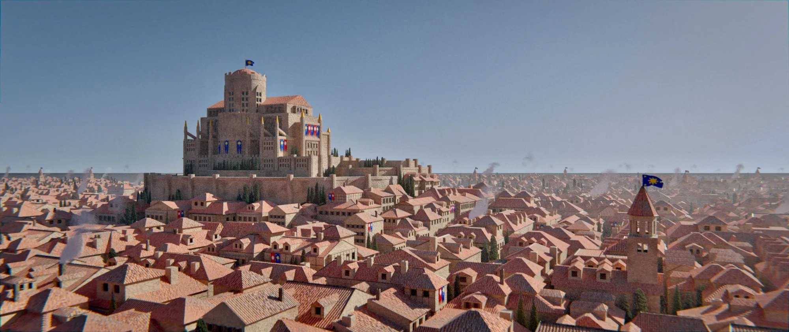
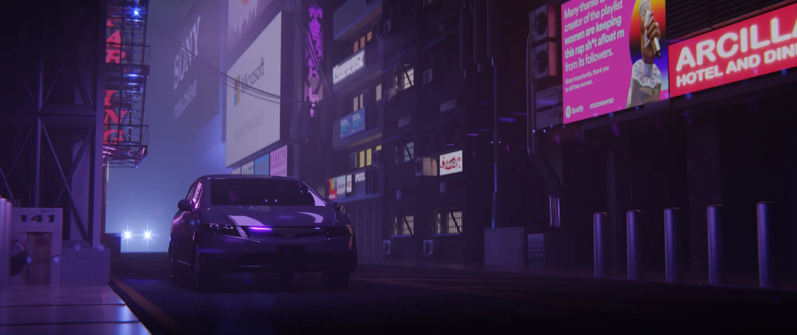
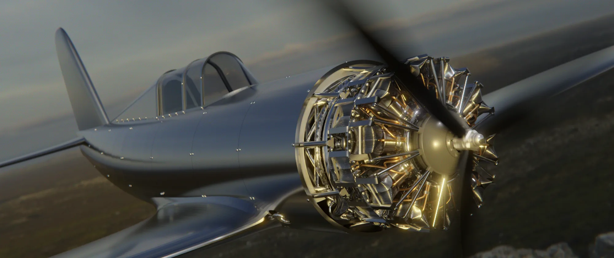
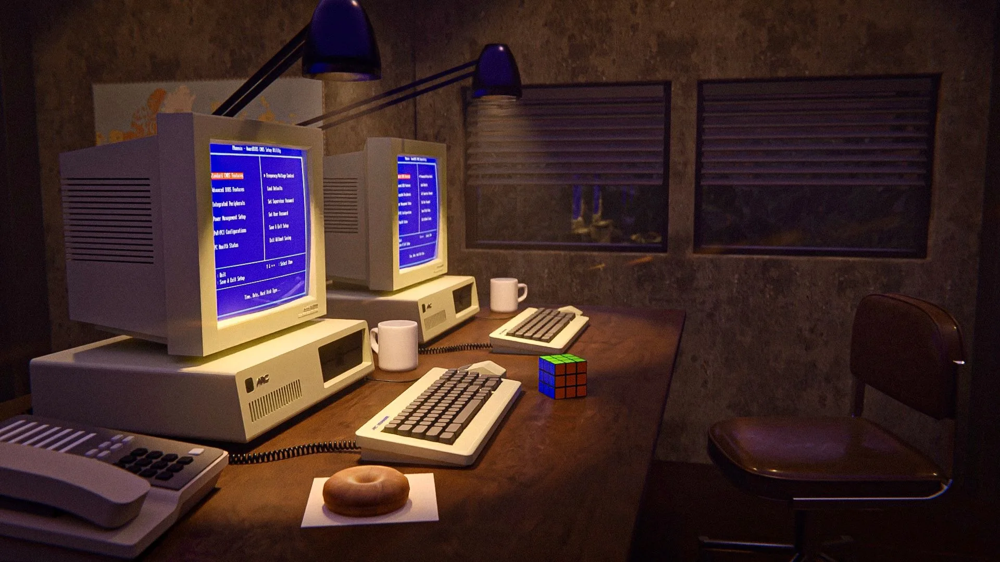
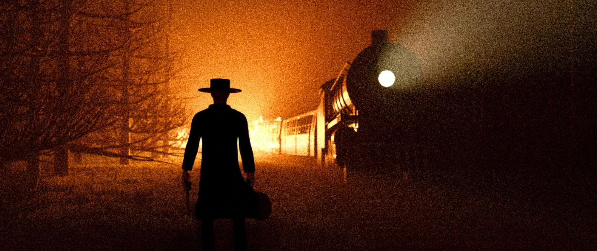
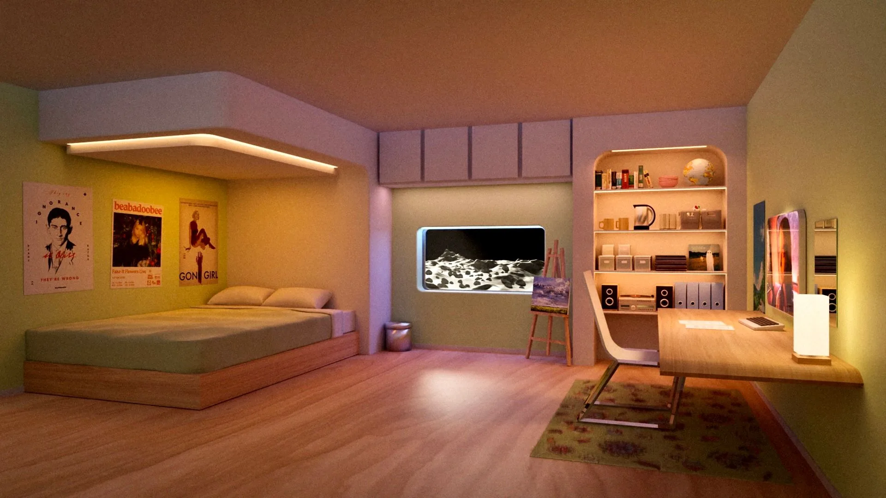
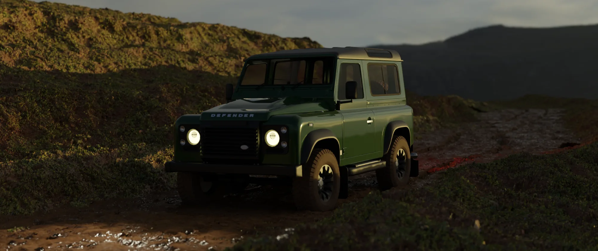
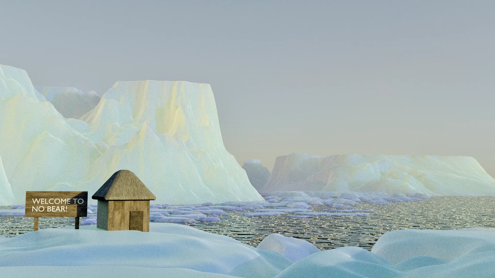
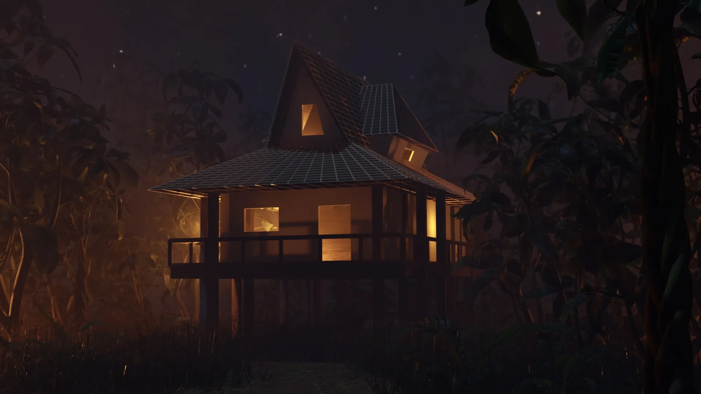

3D rendering
Render portfolio
Scenes I modeled, textured and rendered in Blender, each one built on incremental work in raytracing, 3D topology and procedural textures. Everything was rendered on a single office computer.








